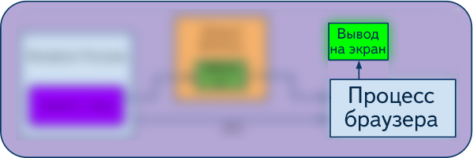
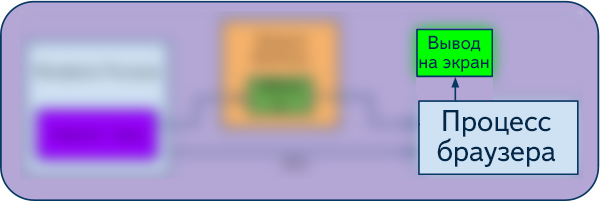
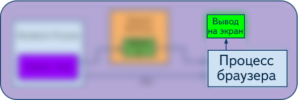

Давным давно... один поток рендера
- Визуализация страницы на CPU
- Основной поток (main thread)
 

Завьялов Александр
Меняем CSS, браузер пересчитывает CSSOM

Основной поток может быть недоступен пользователю!
Всегда поддерживает заданную дисплеем частоту обновления экрана!
Слой (композитный слой) - часть страницы, поддерево DOM. Отрисовывается независимо, компонуется в GPU. Может растягиваться, перемещаться, скрываться (через прозрачность) без отрисовки.
Paint
Composite
transform: translateZ(0)Все остальные могут вызвать обновление текстур
|
|
var tween = TweenLite.to(logo, 3, {
left:"600px", rotation:"360deg", ease:Linear.easeNone });
window.requestAnimationFrame(callback)| setTimeout | rAF |
|---|---|
|
|
Сравнение производительности анимаций CSS/JS
FPS при CSS анимациях замеряется нативным счетчиком FPS
Результат: CSS обеспечивает больший FPS и меньшую загруженность основного потока
| Отдельный поток | Контроль | Синхронизация | |
|---|---|---|---|
| CSS | + * | - | + |
| JS | - | + | +** |
* при анимации opacity, transform
** при использовании rAF
var player = element.animate([
{cssProperty: value0},
{cssProperty: value1},
{cssProperty: value2},
//...
], {
duration: timeInMs,
iterations: iterationCount,
delay: delayValue
});
var animation = new Animation(target,
[{transform: 'translateX(0)'}, {transform: 'translateX(240px)'}], 1000);
var player = document.timeline.play(myAnimation);
...
player.play();
player.pause();
player.finish();
player.reverse();
player.seek();
// Web Animations
var animation = new Animation(element, {"transform": "translate(100px, 200px)"}, 1500);
// GSAP
var animation = TweenMax(element, 1.5, { x: 100, y: 200 });